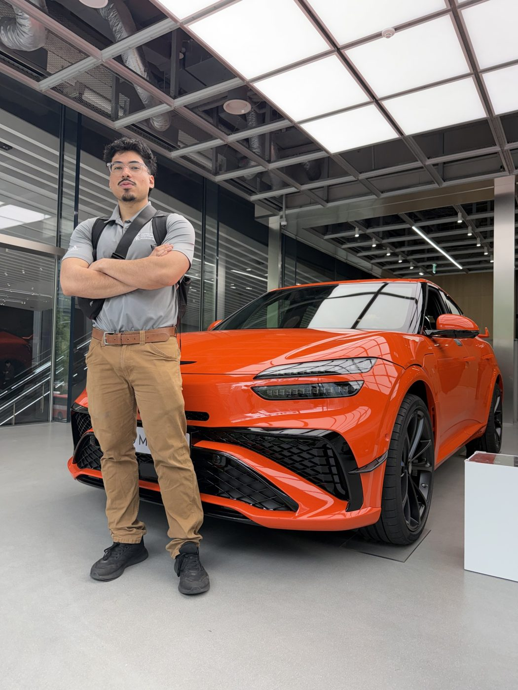

MEET MAX / THE PERSON BEHIND THE PROJECTS
Built to learn.
Driven to create.
I'm Max Iglesias — a Mechanical Engineering student at Michigan State University, graduating May 2027. I care about designing things that work in the real world, learning from testing, and bringing people together to make ambitious ideas happen.

01 / MY PATH
Engineering across
industries.
My engineering experience spans avionics at GE Aerospace, mechanical projects at Marathon Petroleum, and powertrain manufacturing at Ford Motor Company. Each environment has strengthened a different part of my approach: detailed CAD design, systems thinking, manufacturing practicality, and engineering validation.
I'm especially interested in mechanical design, electromechanical hardware, prototyping, and product development — taking an idea from early concept into something that can be built, evaluated, and improved.
02 / PROFESSIONAL JOURNEY
People. Projects. Progress.


03 / LEADERSHIP
More than
engineering.
I've served two consecutive terms as President of the Society of Hispanic Professional Engineers (SHPE) chapter at Michigan State University. That experience taught me how to organize teams, build partnerships, and create opportunities for students navigating their own engineering journeys.
For me, technical excellence and leadership go hand in hand. I want to make good things — and help others do the same.
Explore academic projects ↗04 / OUTSIDE THE LAB
A little more about me.
